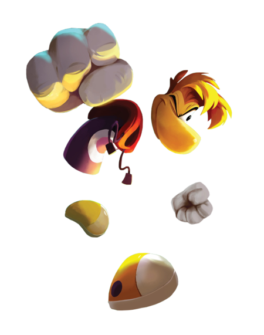
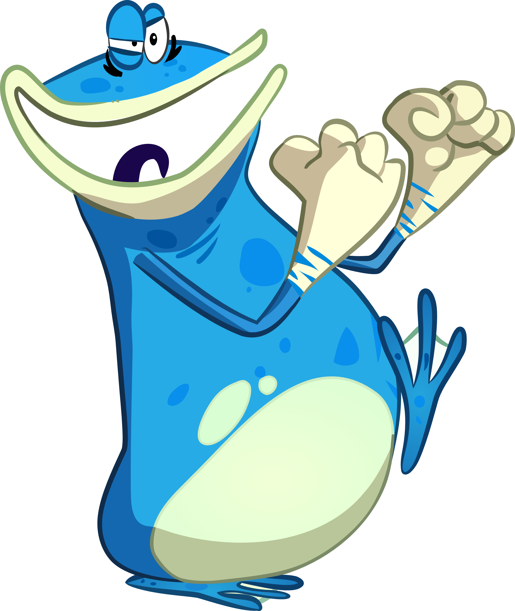
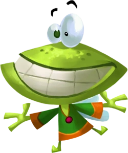
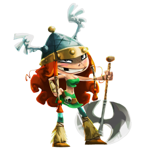
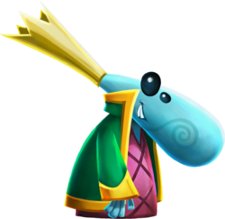

Trailer
Imágenes
Rayman, Globox y los Diminutos andan vagando por un bosque encantado cuando descubren una misteriosa tienda de campaña llena de cautivadores cuadros. Al mirarlos con más atención, se dan cuenta de que cada cuadro parece contar la historia de un mundo mítico. Mientras observan un cuadro que muestra un escenario de aspecto medieval, son succionados de repente dentro del cuadro, entrando en ese mundo que representa, y es ahí donde la aventura comienza. La pandilla deberá correr, saltar y abrirse paso a través de cada mundo para seguir vivos y correteando, y descubrir los secretos de cada uno de los legendarios cuadros. Características: - Batallas finales en 3D: Los jefes tienen una gran ventaja sobre la banda de Rayman... ¡una dimensión más! Los dragones y otras criaturas épicas pueden atacar desde todos los ángulos, así que tendrás que dar lo mejor de ti para vencerlos. - Nuevos retos: Conecta con tus amigos a través de una gran variedad de retos que pondrán a prueba vuestras habilidades.
| Rayman | En la saga de juegos de Rayman, el papel principal de Rayman es el de un héroe que lucha contra diversas fuerzas del mal para proteger su mundo y a sus habitantes. A lo largo de los juegos, Rayman se embarca en aventuras épicas para derrotar a villanos como Mr. Dark, el Doctor Robotnik, y otros antagonistas que amenazan la paz y la estabilidad de su universo. |
| Globox | Globox es un personaje importante en la saga de Rayman, especialmente en Rayman Legends. Es un simpático y algo torpe Globo que acompaña a Rayman en muchas de sus aventuras. En Rayman Legends, Globox es uno de los héroes que se unen a Rayman para salvar el Glade of Dreams de las garras de los malvados Dark Teensies y su ejército de pesadillas. Su papel no solo es el de un compañero de equipo, sino también el de proporcionar momentos cómicos y de apoyo emocional para Rayman y el resto de los personajes. Su personalidad amigable y su apariencia única lo convierten en un favorito entre los fanáticos de la serie. |
| Muffy  | Muffy es un personaje secundario en la saga de videojuegos Rayman. Ella es una de las princesas que Rayman y sus amigos deben rescatar a lo largo del juego. Muffy es conocida por su aspecto dulce y encantador, con un vestido rosa y una corona. Aunque su papel es más bien pasivo en términos de juego, su rescate es una parte importante de la trama y motiva a los jugadores a avanzar a través de los niveles para salvarla. |
| Bárbara | Bárbara es un personaje jugable en la saga de Rayman Legends. Es una vikinga valiente y feroz que se une a Rayman y su pandilla en su lucha contra el malvado mago, Dark Teensies. Bárbara es conocida por su fuerza física y su habilidad para manejar un hacha gigante. Su papel en el juego es el de una aliada poderosa que ayuda a derrotar a los enemigos y superar los obstáculos con su fuerza bruta y determinación. |
| Diminutos | Diminutos es un personaje clave en la saga de Rayman Legends. Es un pequeño ser con aspecto de estrella que acompaña a Rayman y sus amigos en su aventura. Su rol principal es proporcionar ayuda y guía a los jugadores a lo largo de los niveles. Los Diminutos suelen encontrarse ocultos en cada nivel, y al rescatarlos, desbloquean diversos contenidos extras, como niveles adicionales o bonificaciones. Además, su presencia añade un elemento de exploración y desafío, ya que encontrar a todos los Diminutos en un nivel puede ser todo un reto. |